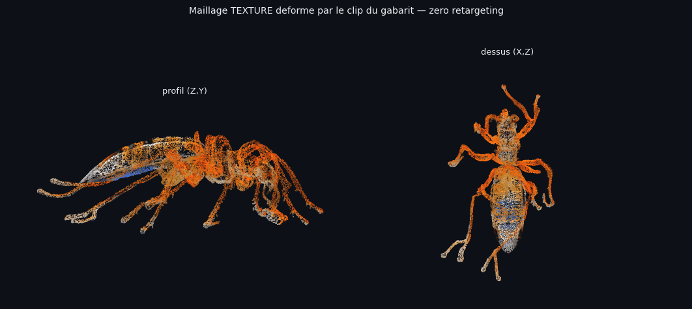
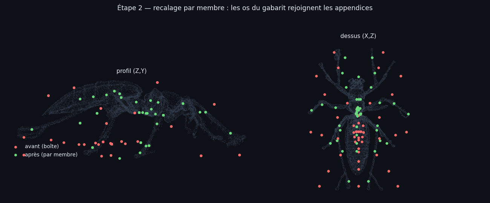
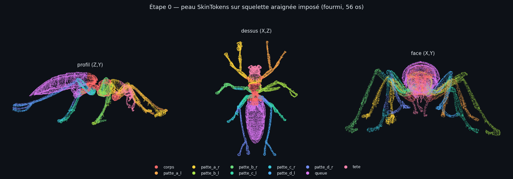
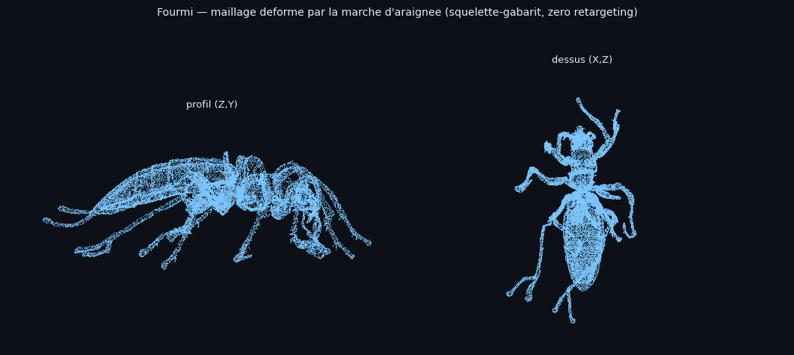

Le rig natif SkinTokens sert de détecteur d'articulations : ses appendices sont appariés par paires miroir (un jumeau synthétique est fabriqué quand le rig natif, asymétrique, n'en fournit pas), puis chaque chaîne du gabarit est rééchantillonnée le long de l'appendice réel. La paire avant de l'araignée va sur les antennes — chaque appendice de la fourmi a désormais sa propre chaîne.
| Mesure | étape 0 (boîte) | étape 2 (par membre) |
|---|---|---|
| squelette conservé | 55 / 56 | 56 / 56 — root compris |
| équilibre patte_d gauche / droite | 21,9 % / 3,0 % | 5,4 % / 5,0 % |
| distance sommet → os dominant (médiane) | 15,4 % | 6,2 % |
| p95 de cette distance | 22,1 % | 13,8 % |
| abdomen | débordait sur une patte | uniformément sur la chaîne « queue » |
| amplitude du maillage animé | 25,7 % | 35,2 % — sans éclatement (p99 : 21,7 %) |

meshes/ant_gabarit_araignee_walk_*.glb — ouvrable dans FabMesh.

